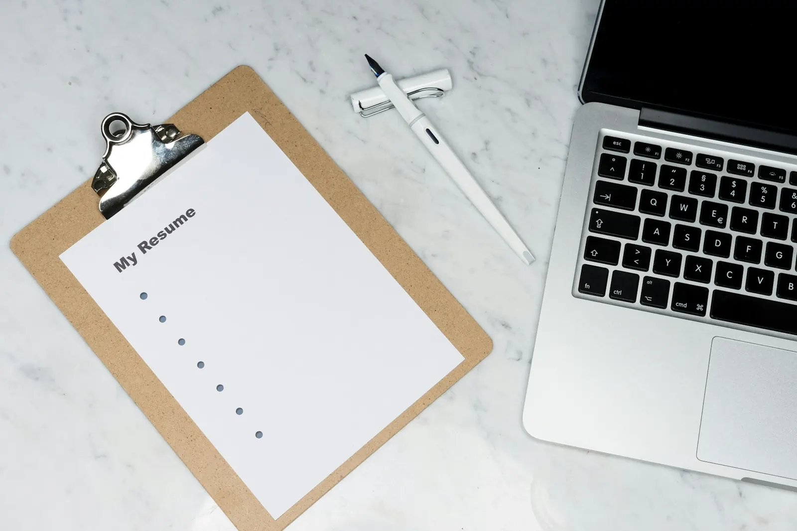
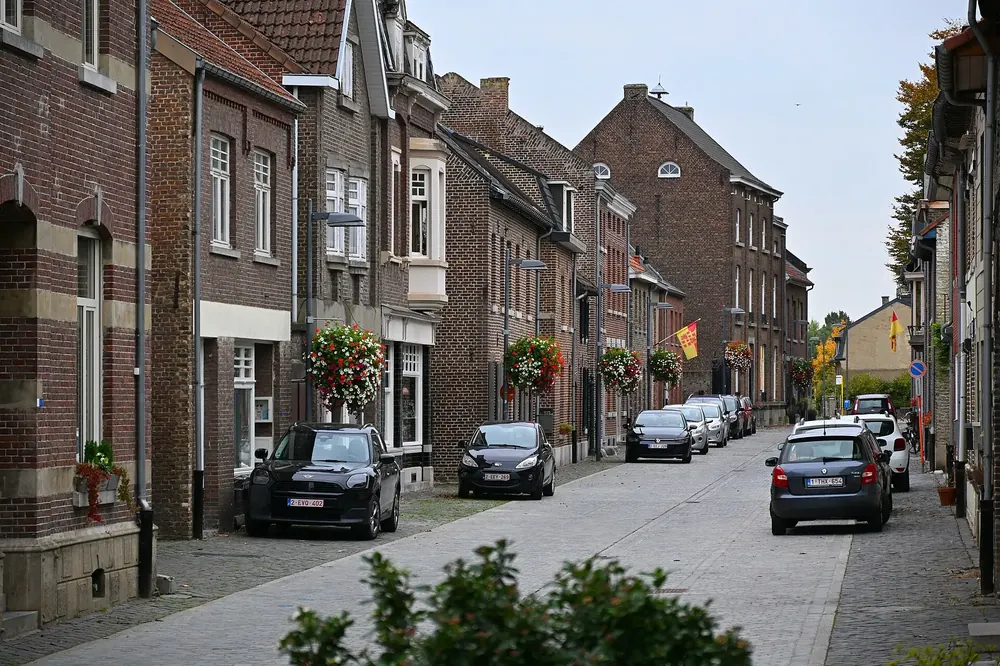
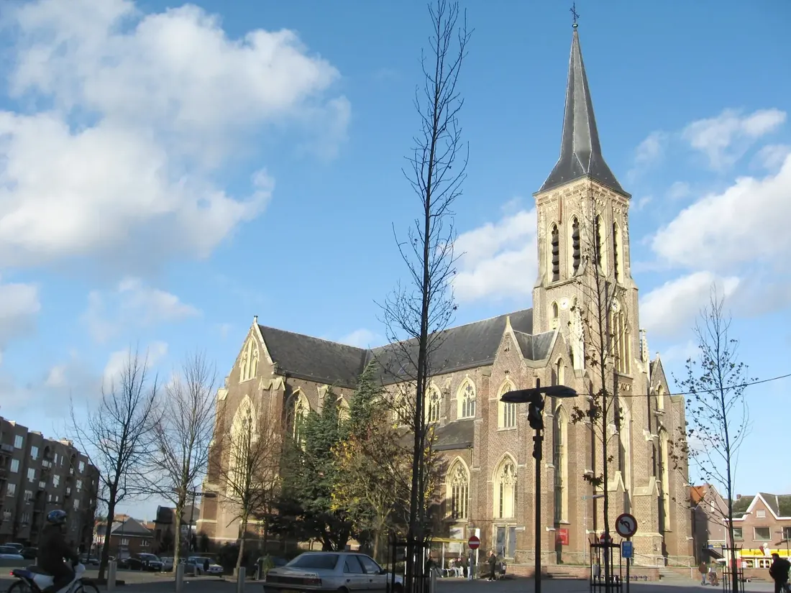

sinds
Veertig jaar advocaat. Altijd met een eigen kantoor.
Mr. Boudewijn Nijsten begon in 1986 meteen voor zichzelf, eerst in Maasmechelen en sinds 1994 aan de Jan Rosierlaan in Lanaken. Bij hem spreekt u met de advocaat zelf, van het eerste gesprek tot de pleidooien.
23 reviews op Google

Een breed kantoor, één vertrouwd gezicht
Particulier of ondernemer, met een scheiding of met een onbetaalde factuur. Kies wat bij u past.
Familierecht en echtscheiding
Echtscheiding met onderlinge toestemming of op grond van onherstelbare ontwrichting, en wat er met de kinderen gebeurt.
Strafrecht
Verdediging bij strafzaken, ook voor het hof van assisen.
Arbeidsrecht
Ontslag, arbeidsovereenkomsten en conflicten tussen werkgever en werknemer.
Verkeersrecht
Ongevallen, overtredingen en zaken voor de politierechtbank.
Huur, koop en verkoop
Woninghuur en handelshuur, ook voor de vrederechter.
Aansprakelijkheid
Schade die iemand u berokkende, of die u verweten wordt.
Incasso
Onbetaalde facturen minnelijk of gerechtelijk invorderen.
Handels- en economisch recht
Contracten, geschillen met klanten en leveranciers.
Vennootschapsrecht
Vragen rond oprichting, aandeelhouders en bestuur.
Insolventierecht
Onderneming in moeilijkheden, gerechtelijke reorganisatie of faillissement.
Gerechtelijk recht
Procedures, termijnen en de uitvoering van vonnissen.
Bemiddeling
Een oplossing in overleg, zonder dat een rechter moet beslissen.
Van Maasmechelen naar de Jan Rosierlaan
Een loopbaan zonder omwegen. Wie bij Mr. Nijsten aanklopt, krijgt ervaring van veertig jaar aan dezelfde tafel.
Licentiaat rechten
Afgestudeerd aan de KU Leuven en meteen gestart met een eigen kantoor.
Maasmechelen
De eerste jaren werkt hij vanuit Maasmechelen.
Lanaken
Het kantoor verhuist naar de Jan Rosierlaan, waar het vandaag nog altijd is.
Strafrecht als passie
Enkele assisenzaken op nationaal niveau werden met gunstig resultaat behandeld.
Veertig jaar
Persoonlijke service en opvolging, met diverse bijscholingen aan de UGent en de KU Leuven.

Wat kost uw zaak? Reken het zelf.
Gaat het om een bedrag in geld, dan kan het ereloon berekend worden volgens de waarde van de zaak. Vul het bedrag in en zie per schijf wat het kantoor rekent.
Per schijf

Per uurEen indicatief basisuurtarief van € 110 tot € 125 exclusief btw. Elke prestatie staat in een prestatiestaat die u altijd mag inkijken.
 Volgens de waarde
Volgens de waardeEen percentage per schijf, zoals hierboven. Correcties zijn mogelijk, bijvoorbeeld voor een bedrag dat niet betwist wordt.
Een vooraf afgesproken forfait voor een vooraf afgesproken opdracht. Zo weet u meteen waar u staat.
Deze berekening is een indicatie volgens de schaal van het kantoor. In onderling overleg is variatie mogelijk, rekening houdend met de aard en de moeilijkheid van de zaak, de hoogdringendheid en de draagkracht van de cliënt.
4,3
"Ik wil graag mijn oprechte waardering uitspreken voor de professionele en menselijke begeleiding die ik heb ontvangen van meester Nijsten tijdens mijn echtscheidingsprocedure."
Jürgen BosmanGoogle-review"Zijn aanpak was steeds uiterst professioneel, duidelijk en doordacht. Hij nam de tijd om alles helder uit te leggen."
Seff KimboGoogle-review"…laat ik weten dat Mter. Nijsten mij steeds correct en professioneel begeleidt in mijn procedure."
MarijkeGoogle-reviewVoetbal, en Lanaken
Voetbal is altijd zijn passie geweest. Vandaag is Mr. Nijsten de huisadvocaat van Patro Eisden. En sinds 2012 zetelt hij in de directie van het AGB in Lanaken.
Wie hier al zo lang werkt, kent de gemeente, de mensen en de rechtbanken in de buurt. Dat merkt u aan de manier waarop een dossier wordt aangepakt.
Juridische bijstand voor de club uit Maasmechelen, de gemeente waar het kantoor van Mr. Nijsten begon.
- 1986start in Maasmechelen
- 1994kantoor in Lanaken
- 2012directielid AGB Lanaken
Jan Rosierlaan 60, Lanaken
Het kantoor ontvangt u op afspraak. Bel even op voorhand, dan wordt er tijd voor u vrijgehouden.
| Maandag | 9u tot 12u · 14u tot 18u |
| Dinsdag | 9u tot 12u · 14u tot 18u |
| Woensdag | 9u tot 12u · 14u tot 18u |
| Donderdag | 9u tot 12u · 14u tot 18u |
| Vrijdag | 9u tot 12u · 14u tot 18u |
| Zaterdag | gesloten |
| Zondag | gesloten |


Goed om te weten voor uw eerste afspraak

Hoe wordt mijn ereloon berekend?
Per uur, volgens de waarde van de zaak of per vooraf afgesproken prestatie. Bij de eerste afspraak bespreekt u samen welke manier het beste past.
Kan ik zien hoeveel tijd er aan mijn dossier besteed is?
Ja. Bij een vergoeding per uur wordt elke prestatie bijgehouden in een prestatiestaat. U mag die op elk moment inkijken.
Wat breng ik mee naar het eerste gesprek?
Alle documenten die over uw zaak gaan: brieven, contracten, een dagvaarding of vonnis, en uw polis rechtsbijstand als u die hebt.
Ik heb een rechtsbijstandsverzekering. Mag ik zelf mijn advocaat kiezen?
Ja, bij een rechtsbijstandsverzekering kiest u zelf uw advocaat. Breng uw polis mee, dan wordt nagekeken wat gedekt is.
Spreek ik altijd met Mr. Nijsten zelf?
Ja. Het kantoor werkt sinds 1986 op die manier: persoonlijke service en opvolging door de advocaat die uw zaak behandelt.
Een afspraak in Lanaken
Bel het kantoor, stuur een bericht of laat hier uw vraag na. U krijgt snel antwoord.